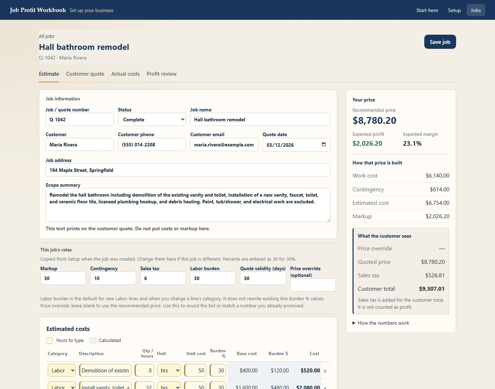
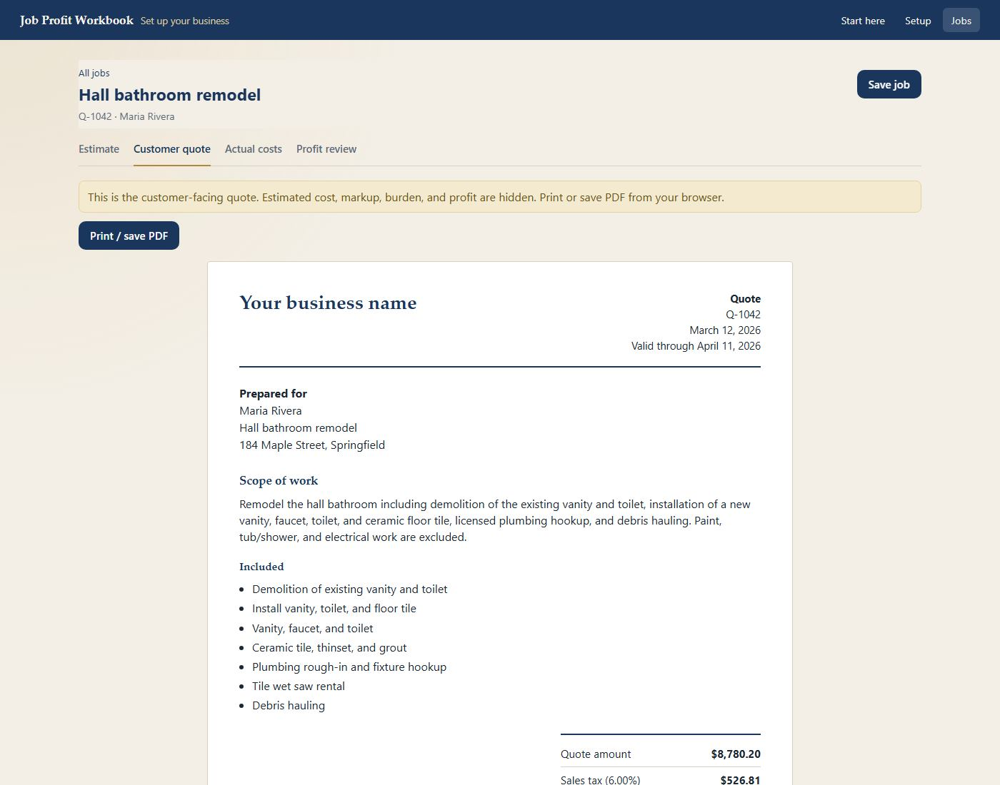
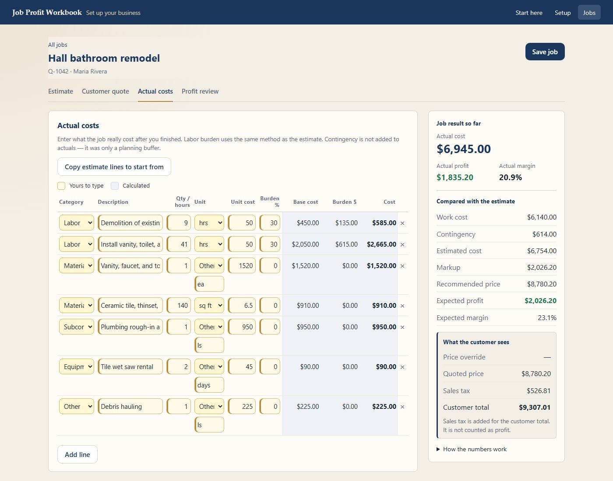
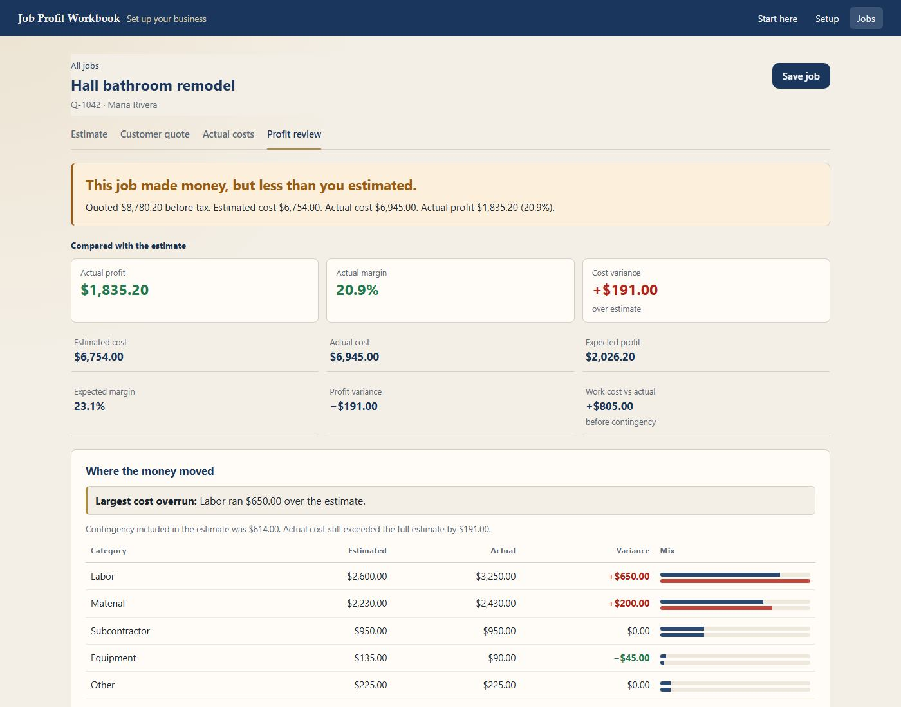

Job Profit Workbook
Know Your Numbers Before You Quote the Job.
Estimate your costs. Build the customer quote. Track what you actually spend. See what you really made.
7-day free trial · No credit card · $199 one-time · No subscription
Start My Free 7-Day Trial For Windows PCs. Downloads the installer. Start the 7-day trial in the workbook after it opens — no credit card.You know what the customer paid. Do you know what the job made?
You estimated the job. You sent the quote. You did the work.
But after materials, labor, subcontractors, equipment, and everything else — what did you actually make?
Job Profit Workbook keeps your estimate, customer quote, actual costs, and final profit together for each job.
From estimate to actual profit — in one job.
Estimate
Build the job cost before you quote it.

Customer Quote
Turn your estimate into the price you give the customer.

Actual Costs
Record what the job really cost.

Profit Review
Compare estimated profit with actual profit and margin.

The numbers that matter on every job.
Build the real cost
Labor, materials, subcontractors, equipment, and other costs — with labor burden and contingency where needed.
Set your price
Apply markup, adjust the quoted price when needed, and account for sales tax.
See expected profit
Know the estimated profit and margin behind your quote.
Compare it with reality
Enter actual costs and see what the job really made.
Learn for the next job
See where your estimate was right or wrong so your next quote can be better.
Built for the job — not your whole business.
What will this job cost me?
What should I quote?
What profit am I expecting?
What did I actually make?
Job Profit Workbook keeps those answers together in one simple workflow.
It's not accounting software. It's not a CRM. It's not a project-management system. It's a focused tool for understanding the numbers on each job.
Try it on your next job. Or your last one.
Use the real Job Profit Workbook free for 7 days and decide for yourself whether it belongs in your business.
Try it free for 7 days
Full workbook access. No credit card.
Keep it for $199
One payment. No subscription.
Your work doesn't disappear when the trial ends.
Purchase a license to continue where you left off.
Your job data stays on your computer.
Job, customer, estimate, quote, cost, and profit information is stored locally and is not uploaded by Job Profit Workbook to Zimbul Apps or Stripe. Trial and licensing use limited registration information to activate the product.
Questions
Do I need a credit card to start?
No. You can use Job Profit Workbook free for 7 days without entering a credit card.
What happens when the 7-day trial ends?
Your work doesn't disappear. Your jobs remain stored on your computer. Purchase a license to continue where you left off.
How much does it cost?
$199 one-time. There is no monthly subscription.
Is this accounting software?
No. Job Profit Workbook is a focused job-profit tool for estimating costs, building a customer quote, recording actual costs, and reviewing the profit on individual jobs.
What kinds of costs can I track?
Labor, materials, subcontractors, equipment, and other job costs.
Can I change my markup and other assumptions?
Yes. You can set your markup, sales tax, contingency, and labor burden and adjust the quoted price when needed.
Where is my job information stored?
Your jobs and business setup are stored locally on your computer — not in the browser or in a Zimbul Apps cloud database. Job, customer, estimate, quote, cost, and profit information is not uploaded by Job Profit Workbook to Zimbul Apps or Stripe. Trial and licensing use limited registration information to activate the product. You can also create a backup to keep a separate copy or move your workbook to another computer.
Does Job Profit Workbook work on Mac?
Job Profit Workbook V1 is currently available for Windows PCs.
Know Your Numbers Before You Quote the Next Job.
Try Job Profit Workbook free for 7 days.
Start My Free 7-Day Trial No credit card · $199 one-time · No subscription · Windows PCs